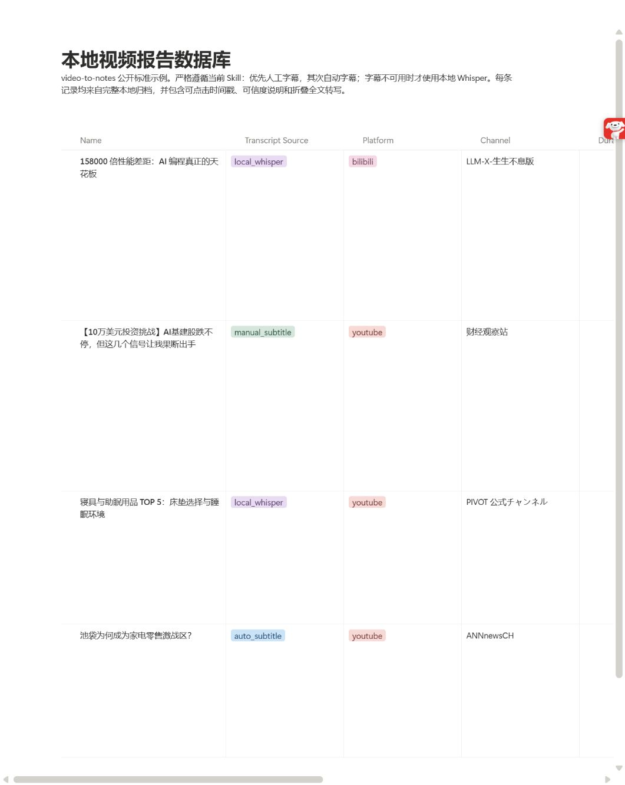

Use existing captions first
Prefer manual or automatic captions instead of spending time and compute on unnecessary transcription.
Open source · Local first · MIT
A caption-first CLI and Codex skill for YouTube, Bilibili, TED, and other
yt-dlp-supported videos. Build traceable transcripts, grounded AI
summaries, searchable HTML reports, and optional Notion or Obsidian entries.
Built for traceability
Long videos are hard to revisit. This workflow keeps the transcript, summary, timestamps, source metadata, and final report together in one local workspace.
Prefer manual or automatic captions instead of spending time and compute on unnecessary transcription.
When captions are missing or unsuitable, transcribe on your own machine with a backend selected for the available hardware.
Ground summaries in the full transcript and preserve clickable timestamps so key points can be checked against the original video.
One repeatable workflow
The CLI prepares trustworthy local artifacts; Codex or another agent can turn the transcript into a grounded summary and subject tags.
Read video metadata and look for the best available captions.
Use local Whisper only when a usable caption track is unavailable.
Create timestamped notes and topic tags from the complete transcript.
Keep a local HTML report or send the result to Notion or Obsidian.
Local-first, stated precisely
Transcripts, metadata, summaries, tags, and HTML reports live in folders you control. Local Whisper keeps fallback transcription on-device. If you ask an external AI agent to write the summary, that agent's own data policy still applies.
Flexible outputs
Process once, then keep the result local or publish it into an existing knowledge system without losing the original transcript and source metadata.
A browser-readable report plus a local dashboard for every processed video.
Store summaries, timestamps, tags, source details, and full transcripts.
Publish Markdown notes with frontmatter and maintain a dashboard note.
Real output
The demo database contains YouTube and Bilibili reports produced from different transcript sources, with Chinese summaries, key points, and complete transcripts.
Open the Notion demo
Product walkthroughs
Both walkthroughs use a real TED run and show how the workflow moves from source captions to local reports and a searchable index.
Caption-first processing, local fallback, and final report output.
字幕优先、本地 Whisper 兜底、HTML 报告和 Notion/Obsidian 发布流程。
Quick install
Clone the repository, run the bootstrap installer, choose the usual language, Whisper fallback, and output environment, then process a video.
Full installation guidegit clone https://github.com/KIRVO-REPORTING/video-to-notes.git
cd video-to-notes
./install.sh
video-to-notes configure
video-to-notes process "VIDEO_URL"Requires Python 3.10+. YouTube also requires Deno 2.3+ or Node.js 22+. Windows installation is documented in the repository.
Questions
Short answers to the decisions that most affect privacy, speed, and output.
No. The workflow prefers usable manual or automatic captions. Local Whisper is the fallback when captions are missing, unsuitable, or explicitly bypassed.
The CLI prepares transcripts and reports but does not require a built-in external summarization service. Codex or another configured agent can read the transcript and write the summary, subject to that agent's own data policy.
YouTube, Bilibili, TED, and other URLs supported by yt-dlp. Availability still depends on the source, access restrictions, and the user's local setup.
Yes. The local environment produces a browser-readable report and searchable dashboard. Notion and Obsidian are optional destinations.
A typical folder includes source metadata, a transcript, a grounded Markdown summary, subject tags, and an HTML report with links back to source timestamps.